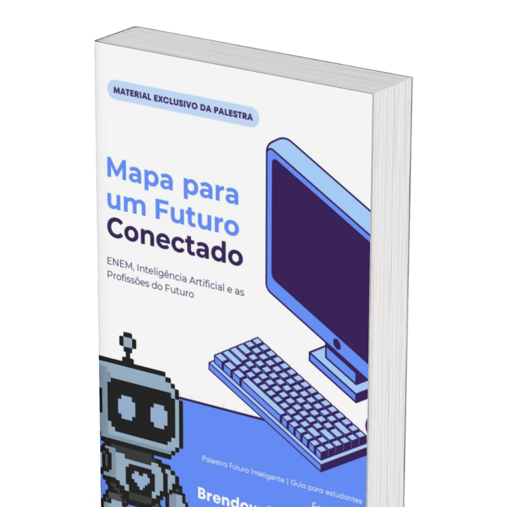

Mapa para um Futuro Conectado
Nosso guia da palestra Futuro Inteligente: estratégias de prova e gestão de tempo, como conversar com a IA, a história da inteligência artificial, as profissões do futuro e um plano de 4 semanas.
Acessar material